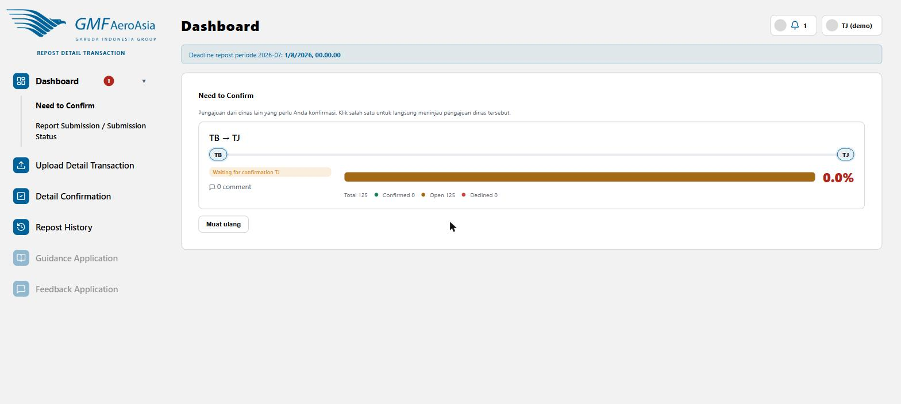
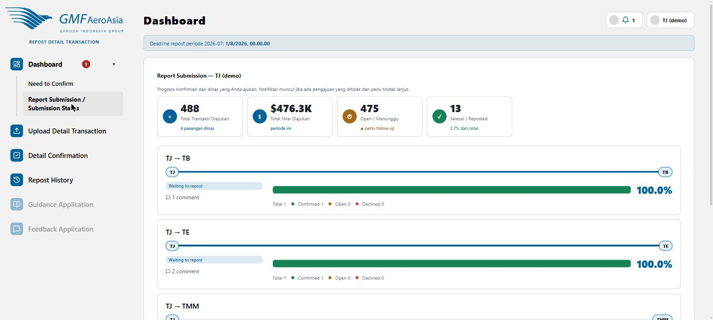

Need to Confirm — transaksi yang menunggu keputusan Anda
rdt/dashboard

- Kartu di sini menunjukkan pasangan dinas (mis. "TB → TJ") yang punya transaksi menunggu keputusan dinas Anda.
- Progress bar oranye = Open (belum diputuskan), hijau = Confirmed, merah = Declined.
- Klik kartu untuk langsung menuju halaman Detail Confirmation pasangan dinas tersebut.
- Badge merah di sebelah menu Dashboard menunjukkan jumlah pasangan yang masih butuh tindakan Anda.
Report Submission / Submission Status — ringkasan transaksi yang Anda ajukan
rdt/dashboard?sub=own

- 4 kartu KPI di atas: Total Transaksi Diajukan, Total Nilai, Open/Menunggu (perlu follow-up), dan Selesai/Reposted.
- Di bawahnya, progress per pasangan dinas yang Anda ajukan ke dinas lain — label "Waiting to repost" berarti sudah Confirmed, tinggal menunggu TAB posting ke SAP.
- Klik jumlah komentar (mis. "1 comment") untuk membuka diskusi pasangan dinas tersebut.